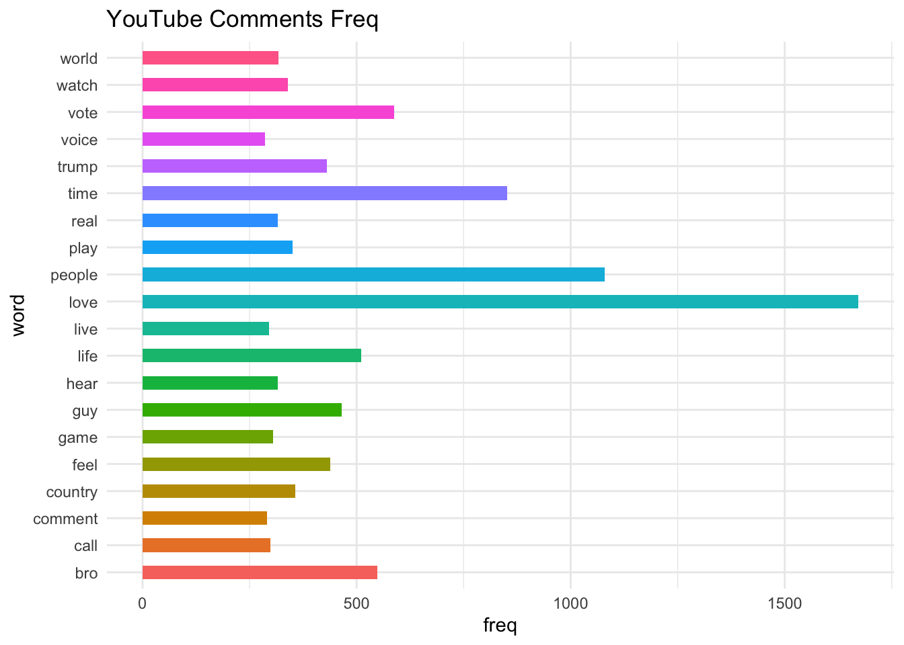
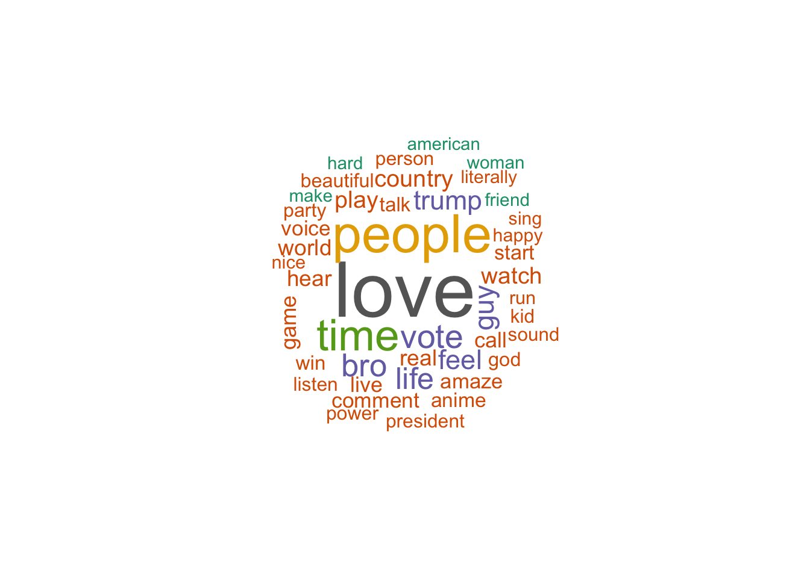
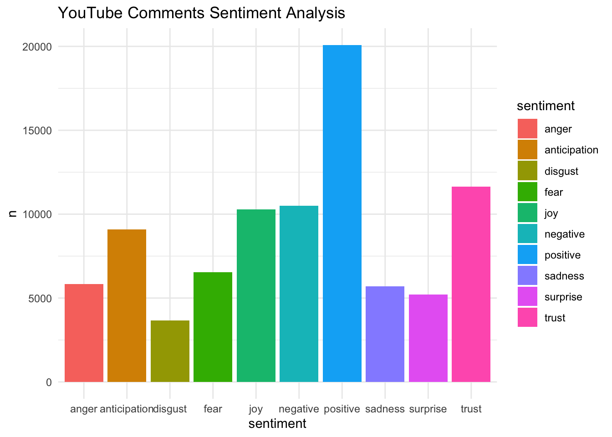

4 11/22 重點回顧
4.1 Step.1 刪除非英文評論
# 讀取資料
library(dplyr)
data <- read.csv("/Users/liam/Desktop/NTNU/碩二/1131/文字探勘/youtube_comments_with_likes_1114.csv")
# 使用正則表達式檢測僅包含英語字母、數字和標點的評論
data_clean <- data %>%
mutate(comment = as.character(comment)) %>%
filter(grepl("^[A-Za-z0-9\\s.,!?\\'\"-]+$", comment))
# 保存清理後的結果
#write.csv(data_clean, "cleaned_youtube_comments.csv", row.names = FALSE)
cat("清理完成，剩餘", nrow(data_clean), "條英語系評論。\n")
#install.packages("textcat")
# 讀取資料並檢測語言
library(textcat)
data <- read.csv("/Users/liam/Desktop/NTNU/碩二/1131/文字探勘/youtube_comments_with_likes_1114.csv")
# 檢測評論語言
data_clean <- data %>%
mutate(comment = as.character(comment),
language = textcat(comment)) %>%
filter(language == "english") # 過濾僅包含英語的評論
# 保存清理後的結果
#write.csv(data_clean, "cleaned_youtube_comments_t2.csv", row.names = FALSE)
cat("清理完成，剩餘", nrow(data_clean), "條英語系評論。\n")4.2 Step.2 文本再清理
## Loading required package: NLP##
## Attaching package: 'dplyr'## The following objects are masked from 'package:stats':
##
## filter, lag## The following objects are masked from 'package:base':
##
## intersect, setdiff, setequal, union##
## Attaching package: 'ggplot2'## The following object is masked from 'package:NLP':
##
## annotate## Loading required package: koRpus.lang.en## Loading required package: koRpus## Loading required package: sylly## For information on available language packages for 'koRpus', run
##
## available.koRpus.lang()
##
## and see ?install.koRpus.lang()##
## Attaching package: 'koRpus'## The following object is masked from 'package:tm':
##
## readTagged# 讀取 CSV 文件
file_path <- "/Users/liam/Desktop/NTNU/碩二/1131/文字探勘/cleaned_youtube_comments_t2.csv"
comments_df <- read.csv(file_path)
# 假設你的 CSV 包含 'comment' 和 'views' 列
# 增加 line 編號作為每條評論的唯一標識
comments_df <- comments_df %>%
mutate(line = row_number())
# 清理文本
comments_df$text <- tolower(comments_df$comment) # 轉換為小寫
comments_df$text <- gsub("[[:punct:]]", " ", comments_df$text) # 移除標點符號
comments_df$text <- gsub("[[:digit:]]", " ", comments_df$text) # 移除數字
comments_df$text <- gsub("\\s+", " ", comments_df$text) # 移除多餘空白
# 將評論拆分為單詞並保留 line 和 views 信息
wordfile <- comments_df %>%
unnest_tokens(word, text, token = "words") %>%
dplyr::select(line, word, views, timestamp, likes)
# 加載標準停用詞列表
stop_words <- tidytext::stop_words
# 移除停用詞
wordfile <- wordfile %>%
anti_join(stop_words, by = "word")
# 擴展停用詞列表，加入縮寫詞和口語詞
custom_stop_words <- data.frame(word = c("hai","bhai","don","music","listen",
"song","ina","video","watch","day",
"edit",
"ve", "ll", "na", "el",
"la", "️️️", "’ll", "‘till
", "’ve", "‘littl", "’re",
"“’m", "“’re", "“bon",
"“copi", "“don’t","you",
"the", "and", "you", "that", "for",
"doesn","didn","facemoji","bio",
"interesrting","awesomeeee","asome",
"hardd","kocham","১ম","২০","৪০","á",
"aa","aaaaaaaaaaahhhhhhhhhhhh",
"aaaaaaaaaaa","aaaaaaaaaa","aaaaaaaa",
"aaa","aaaaaah","aaaaaand","aæaæaæaæaæa",
"aaj","aaliyah","aam","aani","ab"))
# 移除自定義的停用詞
wordfile <- wordfile %>%
anti_join(custom_stop_words, by = "word")
# 使用 lemmatize_words 進行詞形還原
wordfile$word <- lemmatize_words(wordfile$word)
# 移除數字
wordfile <- wordfile %>%
filter(!grepl("\\d+", word))
# 重新計算詞頻
wordfreq <- count(wordfile, word, sort = TRUE)
# 查看前 20 個最常見的詞
wordfreqdf20 <- wordfreq[1:20,]
# 打印結果
wordfreqdf20## word n
## 1 love 1672
## 2 people 1080
## 3 time 852
## 4 vote 587
## 5 bro 549
## 6 life 511
## 7 guy 465
## 8 feel 438
## 9 trump 431
## 10 country 356
## 11 play 351
## 12 watch 339
## 13 world 317
## 14 hear 316
## 15 real 316
## 16 game 305
## 17 call 299
## 18 live 296
## 19 comment 290
## 20 voice 286# 計算 TF-IDF
wordfile_with_tfidf <- wordfile %>%
count(line, word, views, timestamp, likes) %>% # 計算每行每個單詞的頻率
bind_tf_idf(word, line, n) # 計算 TF-IDF
# 查看結果
head(wordfile_with_tfidf)## line word views timestamp likes n tf idf tf_idf
## 1 1 amaze 41022107 5 個月前 4904 1 0.125 4.029920 0.5037400
## 2 1 code 41022107 5 個月前 4904 1 0.125 7.074442 0.8843053
## 3 1 comment 41022107 5 個月前 4904 1 0.125 4.533446 0.5666808
## 4 1 link 41022107 5 個月前 4904 1 0.125 7.559950 0.9449938
## 5 1 receive 41022107 5 個月前 4904 1 0.125 6.931342 0.8664177
## 6 1 reward 41022107 5 個月前 4904 1 0.125 7.847632 0.98095404.2.1 Case 1 詞頻&文字雲
# 繪製詞頻圖
ggplot(data = wordfreqdf20, aes(x = word, y = n, fill = word)) +
geom_bar(stat = "identity", position = "dodge", width = 0.5) +
coord_flip() +
labs(title = "YouTube Comments Freq", x = "word", y = "freq") +
theme_minimal() +
theme(legend.position = "none")
## Loading required package: RColorBrewer# 構建詞與詞頻數據，假設你的詞頻表已經計算好了
wordfreq <- count(wordfile, word, sort = TRUE)
# 繪製文字雲
wordcloud(words = wordfreq$word,
freq = wordfreq$n,
min.freq = 200, # 設定最低出現頻率
random.order = FALSE, # 詞語按照頻率大小排序
colors = brewer.pal(8, "Dark2")) # 設定顏色
4.2.2 Case 2 情感分析
# 加載必要的套件
library(tidytext)
library(dplyr)
# 使用 "nrc" 情感詞典進行情感分析
wordfile_sentiments <- inner_join(wordfile, get_sentiments("nrc"), by = "word")## Warning in inner_join(wordfile, get_sentiments("nrc"), by = "word"): Detected an unexpected many-to-many
## relationship between `x` and `y`.
## ℹ Row 3 of `x` matches multiple
## rows in `y`.
## ℹ Row 4195 of `y` matches multiple
## rows in `x`.
## ℹ If a many-to-many relationship is
## expected, set `relationship =
## "many-to-many"` to silence this
## warning.# 允許多對多關係
wordfile_sentiments <- inner_join(wordfile, get_sentiments("nrc"), by = "word", relationship = "many-to-many")
# 統計各種情感的出現頻率
sentiment_counts <- wordfile_sentiments %>%
count(sentiment, sort = TRUE)
# 繪製情感條形圖
ggplot(sentiment_counts, aes(x = sentiment, y = n, fill = sentiment)) +
geom_bar(stat = "identity") +
theme_minimal() +
ggtitle("YouTube Comments Sentiment Analysis")
4.2.3 Case 3 主題模型
library(topicmodels)
library(tidytext)
library(dplyr)
library(ggplot2)
library(tidyr)
# 假設數據存儲在 `wordfile_with_tfidf`
data <- wordfile_with_tfidf
# 過濾無意義的單詞，確保詞頻不為 0
filtered_data <- data %>%
filter(!is.na(word) & !is.na(tf_idf) & tf_idf > 0)
# 創建詞頻矩陣 (DocumentTermMatrix)
dtm <- filtered_data %>%
count(line, word, wt = tf_idf) %>% # 使用 tf_idf 作為詞頻權重
cast_dtm(line, word, n) # 轉換為 DocumentTermMatrix 格式
# 設置主題數量 (可調整)
k <- 5
filtered_data <- filtered_data %>%
mutate(tf_idf_int = round(tf_idf * 100)) # 將 tf_idf 轉換為非負整數
dtm <- filtered_data %>%
count(line, word, wt = tf_idf_int) %>% # 使用非負整數權重
cast_dtm(line, word, n) # 轉換為 DocumentTermMatrix 格式
# 訓練 LDA 模型
lda_model <- LDA(dtm, k = k, control = list(seed = 1234))
# 查看模型摘要
lda_model## A LDA_VEM topic model with 5 topics.# 提取每個主題的關鍵詞 (beta 矩陣)
lda_topics <- tidy(lda_model, matrix = "beta")
# 查看每個主題的前 10 個關鍵詞
lda_top_terms <- lda_topics %>%
group_by(topic) %>%
slice_max(beta, n = 10) %>%
ungroup()
# 可視化每個主題的關鍵詞
lda_top_terms %>%
mutate(term = reorder_within(term, beta, topic)) %>%
ggplot(aes(beta, term, fill = factor(topic))) +
geom_col(show.legend = FALSE) +
facet_wrap(~ topic, scales = "free") +
scale_y_reordered() +
labs(title = "LDA Topics Analysis",
x = "Beta",
y = "word")
# 提取每個文檔的主題分佈 (gamma 矩陣)
lda_documents <- tidy(lda_model, matrix = "gamma")
# 查看第 6 個文檔的主題分佈
lda_documents %>%
filter(document == "6") %>%
arrange(desc(gamma))## # A tibble: 5 × 3
## document topic gamma
## <chr> <int> <dbl>
## 1 6 1 0.538
## 2 6 3 0.354
## 3 6 2 0.108
## 4 6 5 0.000109
## 5 6 4 0.000109# 定義要測試的主題數量
topics <- c(2, 5, 10, 15, 20)
# 訓練不同主題數量的 LDA 模型
ldas <- lapply(topics, function(k) {
LDA(dtm, k = k, control = list(seed = 1234))
})
# 計算困惑度
perplexities <- sapply(ldas, perplexity)
# 可視化困惑度與主題數量的關係
data.frame(k = topics, perplexity = perplexities) %>%
ggplot(aes(k, perplexity)) +
geom_line() +
geom_point() +
labs(title = "Num x Perplex",
x = "Topic Num",
y = "perplexity")
4.3 Step.3 變數修正（時間&按讚數）
# 創建清理 timestamp 的函數
clean_timestamp <- function(timestamp) {
# 移除 "(已編輯)" 的內容
timestamp <- gsub("\\(已編輯\\)", "", timestamp)
# 處理不同的時間單位，並轉換為天數
timestamp_days <- ifelse(
grepl("年前", timestamp),
as.numeric(gsub("年前", "", timestamp)) * 365, # 年轉換為天
ifelse(
grepl("個月前", timestamp),
as.numeric(gsub("個月前", "", timestamp)) * 30, # 月轉換為天
ifelse(
grepl("週前", timestamp),
as.numeric(gsub("週前", "", timestamp)) * 7, # 週轉換為天
ifelse(
grepl("天前", timestamp),
as.numeric(gsub("天前", "", timestamp)), # 天保持不變
0 # 無法識別的時間，預設為 0
)
)
)
)
return(timestamp_days)
}
library(dplyr)
# 將 timestamp 轉換為統一的天數
wordfile_with_tfidf <- wordfile_with_tfidf %>%
mutate(
timestamp_days = clean_timestamp(timestamp) # 新增統一格式的天數欄位
)
library(dplyr)
# 檢查哪些值轉換後是 NA
problematic_likes <- wordfile_with_tfidf %>%
filter(is.na(as.numeric(gsub("萬", "", likes)))) %>%
select(likes) %>%
distinct()
wordfile_with_tfidf <- wordfile_with_tfidf %>%
mutate(likes = case_when(
grepl("^\\d+(\\.\\d+)?萬$", likes) ~ as.numeric(sub("萬", "", likes)) * 10000, # 處理「X萬」格式
grepl("^\\d+$", likes) ~ as.numeric(likes), # 處理純數字
TRUE ~ NA_real_ # 其他情況設為 NA
))
# 檢查轉換後的結果
head(wordfile_with_tfidf$likes)
# 假設 wordfile_with_tfidf 已經存在於 R 環境中
#output_path <- "/Users/liam/Desktop/NTNU/碩二/1131/文字探勘/wordfile_with_tfidf.csv"
# 將資料框寫入 CSV 檔案
#write.csv(wordfile_with_tfidf, file = output_path, row.names = FALSE)
# 確認輸出
#cat("檔案已輸出至：", output_path)4.4 What now..最新資料視圖
# 讀取 CSV 文件
file_path <- "/Users/liam/Desktop/NTNU/碩二/1131/文字探勘/wordfile_with_tfidf.csv"
data <- read.csv(file_path)
# 顯示前 5 行的具體列
library(knitr)
kable(head(data[, c("line", "word", "views", "timestamp", "likes", "n", "tf", "idf", "tf_idf", "timestamp_days")]), caption = "Data 現在長這樣")| line | word | views | timestamp | likes | n | tf | idf | tf_idf | timestamp_days |
|---|---|---|---|---|---|---|---|---|---|
| 1 | amaze | 41022107 | 5 個月前 | 4904 | 1 | 0.125 | 4.029920 | 0.5037400 | 150 |
| 1 | code | 41022107 | 5 個月前 | 4904 | 1 | 0.125 | 7.074442 | 0.8843053 | 150 |
| 1 | comment | 41022107 | 5 個月前 | 4904 | 1 | 0.125 | 4.533446 | 0.5666808 | 150 |
| 1 | link | 41022107 | 5 個月前 | 4904 | 1 | 0.125 | 7.559950 | 0.9449938 | 150 |
| 1 | receive | 41022107 | 5 個月前 | 4904 | 1 | 0.125 | 6.931342 | 0.8664177 | 150 |
| 1 | reward | 41022107 | 5 個月前 | 4904 | 1 | 0.125 | 7.847632 | 0.9809540 | 150 |
4.5 轉換寬格式的必要？
# 載入套件
library(dplyr)
library(tidyr)
# 讀取資料
data <- read.csv("/Users/liam/Desktop/NTNU/碩二/1131/文字探勘/wordfile_with_tfidf.csv", stringsAsFactors = FALSE)
data <- data %>%
rename(line_id = line)
# 資料預處理
data$line_id <- as.factor(data$line_id)
data$word <- as.character(data$word)
# 將資料轉換為寬格式（詞彙矩陣）
tf_idf_matrix <- data %>%
select(line_id, word, tf_idf) %>%
pivot_wider(
names_from = word,
values_from = tf_idf,
values_fill = list(tf_idf = 0)
)
# 提取每則留言的其他特徵
other_features <- data %>%
group_by(line_id) %>%
summarize(
views = first(views),
likes = first(likes),
timestamp = first(timestamp),
timestamp_days = first(timestamp_days)
)
# 合併詞彙矩陣與其他特徵
final_data <- tf_idf_matrix %>%
left_join(other_features, by = "line_id")
# 處理缺失值
final_data$likes[is.na(final_data$likes)] <- 0
# 設置觀看次數的上限
upper_limit <- 10000000 # 1000 萬
# 對觀看次數做截斷
final_data <- final_data %>%
mutate(views_capped = ifelse(views > upper_limit, upper_limit, views))
# 過濾
final_data_filtered <- final_data %>%
filter(views <= upper_limit)
head(final_data)4.6 Step.4 ML model selection
老師建議： 1.布瓦松 2.負二項 3.Y分類->成功、不成功、待成功 123
#######################################################
## 長格式資料、不tune
#######################################################
# 載入必要的套件
library(tidyverse)
library(tidymodels)
library(textrecipes)
# 假設您的資料已讀取，並命名為 data
# 資料包含以下欄位：line_id, word, views, timestamp, likes, n, tf, idf, tf_idf, timestamp_days
# 定義觀看次數的區間和對應的分類
recode_views <- function(views) {
if (views >= 500000 & views < 1000000) {
return(1)
} else if (views >= 1000000 & views < 2000000) {
return(2)
} else if (views >= 2000000 & views < 4000000) {
return(3)
} else if (views >= 4000000 & views < 5000000) {
return(4)
} else if (views >= 5000000 & views < 6000000) {
return(5)
} else if (views >= 7000000 & views < 8000000) {
return(6)
} else if (views >= 8000000 & views < 9000000) {
return(7)
} else if (views >= 9000000 & views < 10000000) {
return(8)
} else if (views >= 10000000 & views < 15000000) {
return(9)
} else if (views >= 15000000) {
return(10)
} else {
return(NA)
}
}
# 應用編碼函數並移除缺失值
data <- data %>%
mutate(views_category = sapply(views, recode_views)) %>%
drop_na(views_category) %>%
mutate(views_category = factor(views_category)) # 將目標變數轉換為因子
# 處理數值型特徵，將 likes 和 timestamp_days 轉換為數值型，並處理缺失值
data <- data %>%
mutate(
likes = as.numeric(likes),
likes = ifelse(is.na(likes), 0, likes),
timestamp_days = as.numeric(timestamp_days),
timestamp_days = ifelse(is.na(timestamp_days), 0, timestamp_days)
)
# 分割資料（確保每個 line_id 只出現在訓練或測試集之一）
set.seed(1234)
line_ids <- unique(data$line_id)
train_ids <- sample(line_ids, size = 0.7 * length(line_ids))
train_data <- data %>% filter(line_id %in% train_ids)
test_data <- data %>% filter(!line_id %in% train_ids)
train_data <- train_data %>%
dplyr::select(-c(tf, idf, timestamp, views))
ml_recipe <- recipe(views_category ~ word , data = train_data) %>%
step_dummy(all_nominal_predictors(), -all_outcomes()) %>%
step_normalize(all_numeric_predictors())
ml_recipe <- recipe(views_category ~ word + tf_idf , data = train_data) %>%
# 移除不必要的欄位（若有）
step_other(word, threshold = 0.01) %>% # 將出現頻率低於1%的詞彙歸類為 "other"
step_dummy(word) %>% # 將 'word' 轉換為虛擬變數
step_normalize(all_numeric_predictors()) # 標準化數值型預測變數
# 檢查配方是否正確
prep(ml_recipe, training = train_data) %>% juice() %>% head()
# 建立模型規格（未調參）
lasso_spec <- multinom_reg(penalty = 0.1, mixture = 1) %>% # LASSO 邏輯回歸
set_engine("glmnet")
svm_spec <- svm_linear(cost = 1) %>% # 線性 SVM
set_mode("classification") %>%
set_engine("LiblineaR")
null_spec <- null_model() %>% # Null 模型
set_mode("classification") %>%
set_engine("parsnip")
# 建立工作流程
lasso_workflow <- workflow() %>%
add_recipe(ml_recipe) %>%
add_model(lasso_spec)
svm_workflow <- workflow() %>%
add_recipe(ml_recipe) %>%
add_model(svm_spec)
null_workflow <- workflow() %>%
add_recipe(ml_recipe) %>%
add_model(null_spec)
# 訓練模型
final_lasso_fit <- fit(lasso_workflow, data = train_data)
final_svm_fit <- fit(svm_workflow, data = train_data)
final_null_fit <- fit(null_workflow, data = train_data)
# 預測與評估
# 定義評估指標
eval_metrics <- metric_set(accuracy, kap, roc_auc)
# LASSO 模型評估
lasso_predictions <- predict(final_lasso_fit, test_data, type = "prob") %>%
bind_cols(predict(final_lasso_fit, test_data)) %>%
bind_cols(test_data %>% select(views_category))
lasso_metrics <- lasso_predictions %>%
eval_metrics(truth = views_category, estimate = .pred_class)
print("LASSO 模型評估結果：")
print(lasso_metrics)
# SVM 模型評估
svm_predictions <- predict(final_svm_fit, test_data, type = "prob") %>%
bind_cols(predict(final_svm_fit, test_data)) %>%
bind_cols(test_data %>% select(views_category))
svm_metrics <- svm_predictions %>%
eval_metrics(truth = views_category, estimate = .pred_class)
print("SVM 模型評估結果：")
print(svm_metrics)
# Null 模型評估
null_predictions <- predict(final_null_fit, test_data) %>%
bind_cols(test_data %>% select(views_category))
null_metrics <- null_predictions %>%
eval_metrics(truth = views_category, estimate = .pred_class)
print("Null 模型評估結果：")
print(null_metrics)
# 合併所有模型的評估結果
all_metrics <- bind_rows(
lasso_metrics %>% mutate(model = "LASSO"),
svm_metrics %>% mutate(model = "SVM"),
null_metrics %>% mutate(model = "Null Model")
)
print("所有模型的評估結果：")
print(all_metrics)